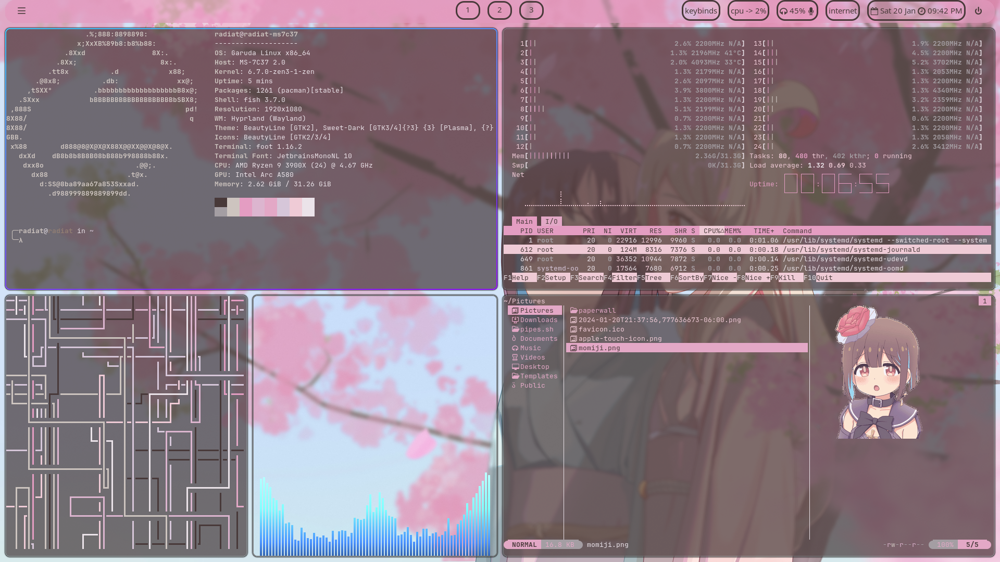
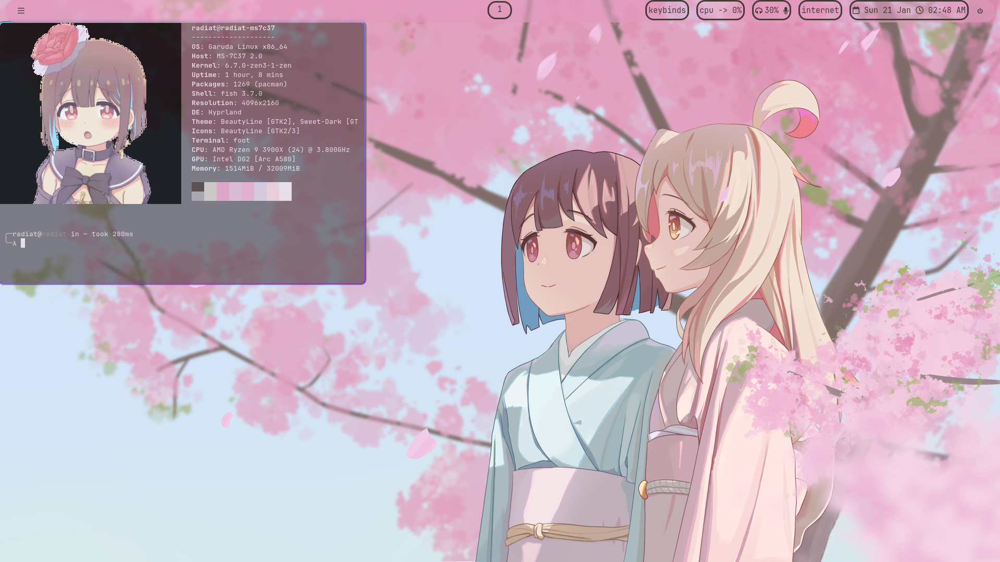
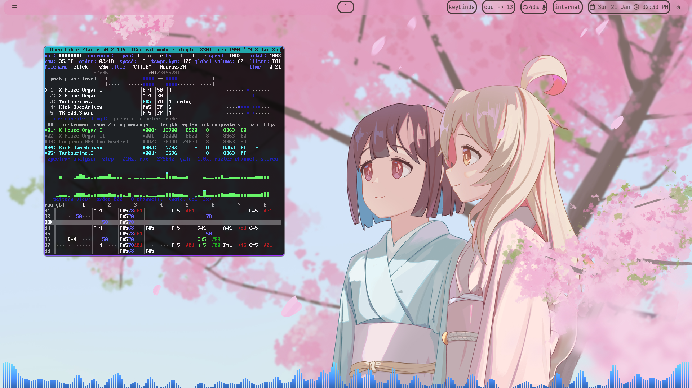
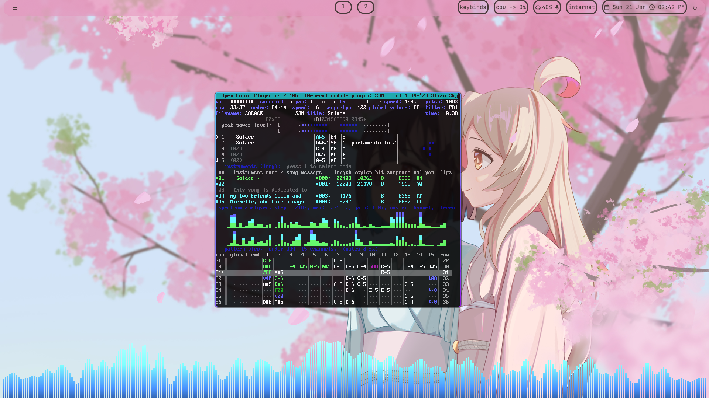
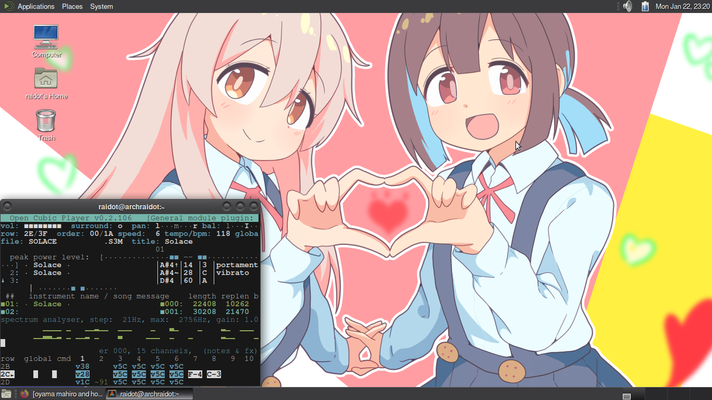

raidotpDOTneocitiesDOTorg
Home
About
News
Gaming
Projects
made a linux rice for the first time
[Hyprland] First rice what do you guys think and what should I improve?
by
u/sannnneees45
in
unixporn
if your under the shitty ck-express too bad I guess
heres some updated screenshots
   
and heres a mate-arch image cause why not
